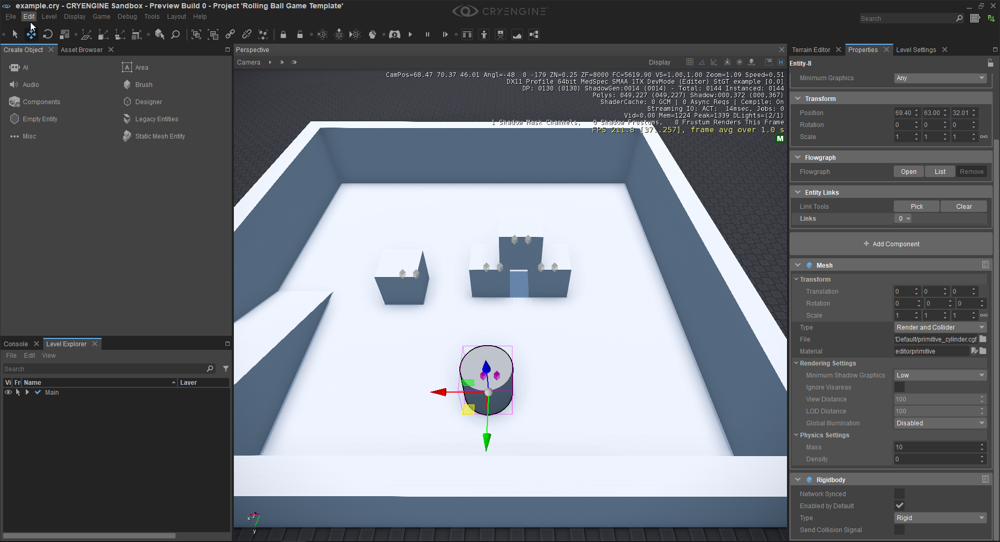
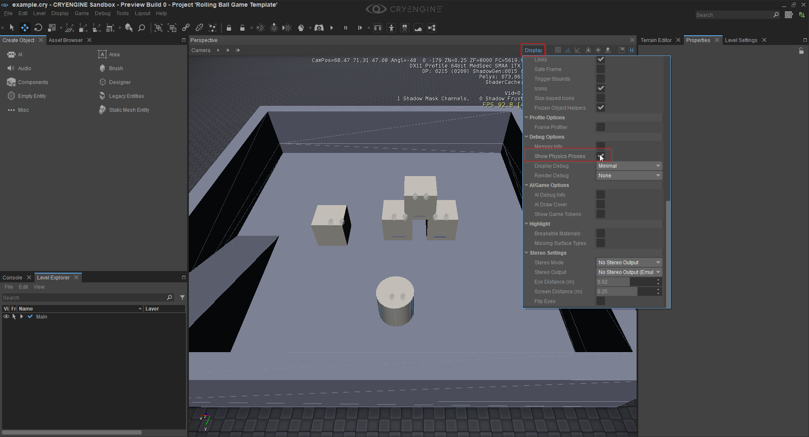
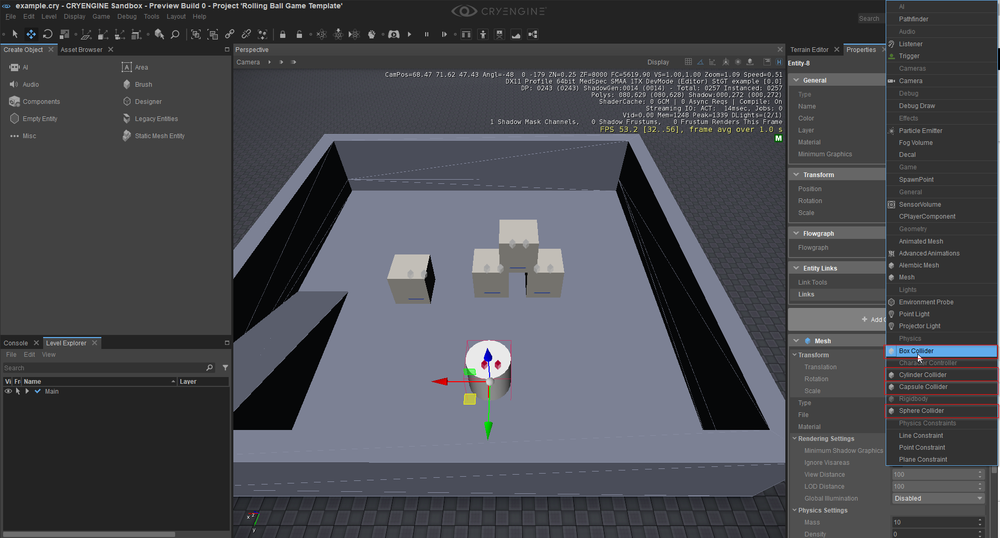
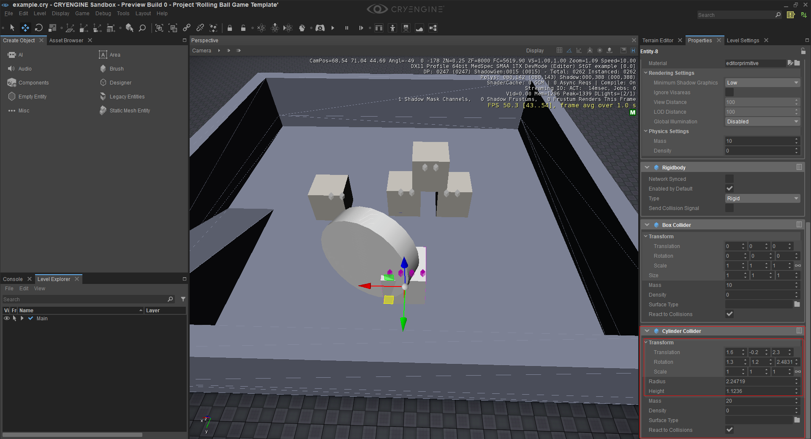

Using the Collider Component
In this tutorial, we are going to explain the collider components and how to use them with the mesh component and the rigidbody component. The Collider components provide simple collision shapes for your entities. It is also recommended to read the Entity Components documentation to understand or look up what the specific attributes do.
This tutorial will use the Mesh component and the Rigidbody component, so if you don't know what they do please see the Tutorial - Rigidbody Component and Tutorial - Mesh Component tutorials first. We will focus on changing the collision of your entity and explain how to create more complex collision shapes.
The way to add Collider components that is described here saves a lot on performance. Just make sure that when you import your own mesh through the FBX Importer, you turn off all Material Physicalization in the Material tab.
To get started with the collider components we need to add a rigidbody component and a mesh component first. So create an entity and add those two components to it, select any geometry you want to have. In this case, we are going to take the cylinder mesh and are working in the Rolling Ball template.
Create an Empty Entity, go to its Properties, click Add Component and add a Physics -> Rigidbody component and a Geometry -> Mesh component to it and select some geometry by clicking the Browse button next to File in the Mesh component properties and browsing to the geometry you want to use. (In this case we're using a cylinder, but this can be any geometry you want to use in your project).

As you might already know from the rigidbody tutorial, the mesh component is our geometry and collision at the same time. You can enable a debug feature to see all the collider in your level. To do so click on the display button in the upper left corner of your perspective view port, this enables a context menu where you can adjust all kind of display attributes for your viewport. Scroll to the bottom and select the Show Physics Proxies checkbox. Now you should be able to see all colliders in your scene:

As we can see our mesh is also our collider. Sometimes you may not have a mesh or you want to have a specific collider. This is where the Collider component can help.
Select your entity and go to the Properties panel and click on the Add Component button to add any Collider component you want:

Now you can see that the collider of the entity changed to whatever collider you selected, in this case we chose the Box Collider. The Collider component exposes several properties to specify its physical behavior. You can change the mass and surface type of the object and also register this collider to send events to C++ or Schematyc, if a collision happened. Play around with the attributes and see how the entity behaves.
An entity can have multiple colliders, so we can add another one to the entity and change the Transformation attribute of the Collider component to rotate it or move it around. The position of the component is relative to the entity's origin:

As you can see in the picture above, we added a new cylinder component and adjusted the transformation, radius, height of the collider to create a more complex shape. You can add as many colliders as you want and create whatever shape you need. If you now jump into game mode and disable the physic proxies helper, you can see that your mesh didn't change but the collision did.